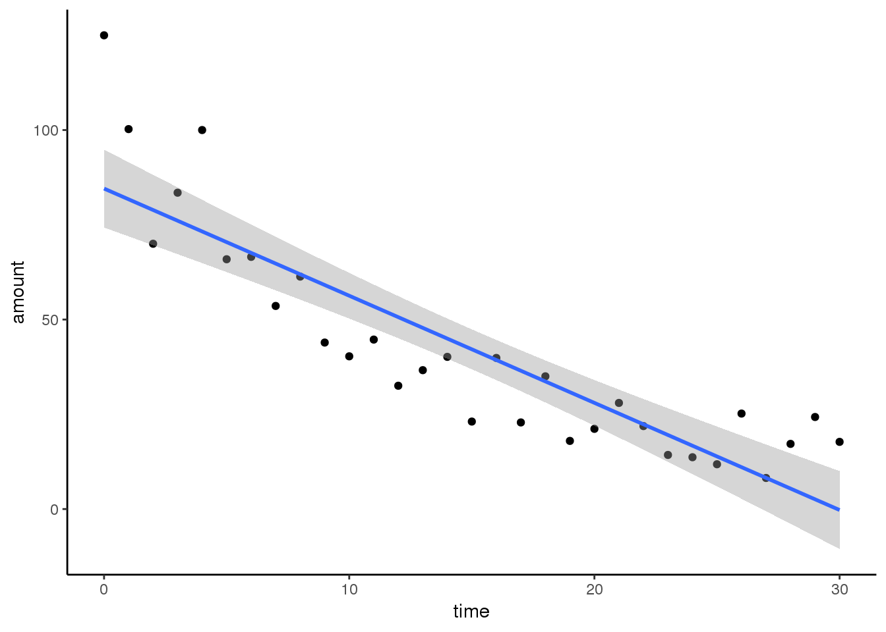
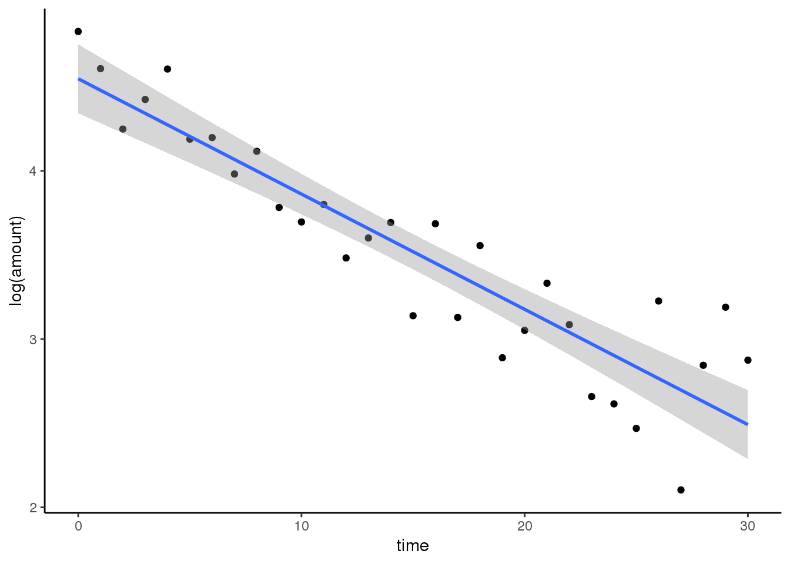
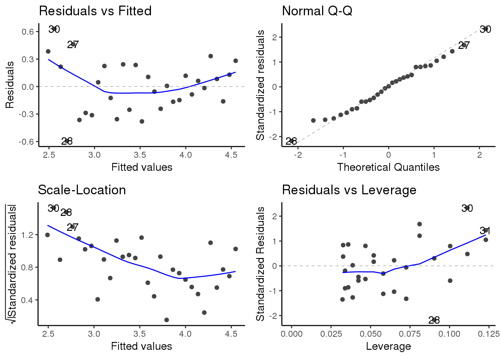
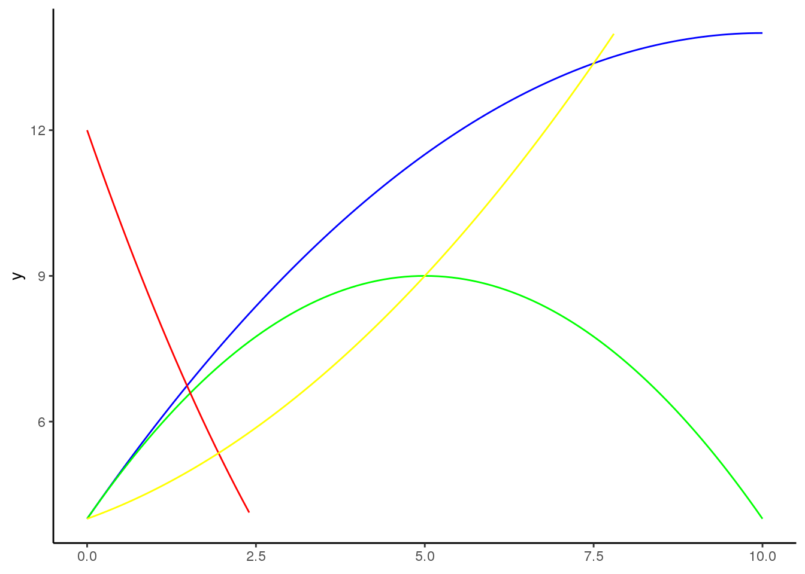
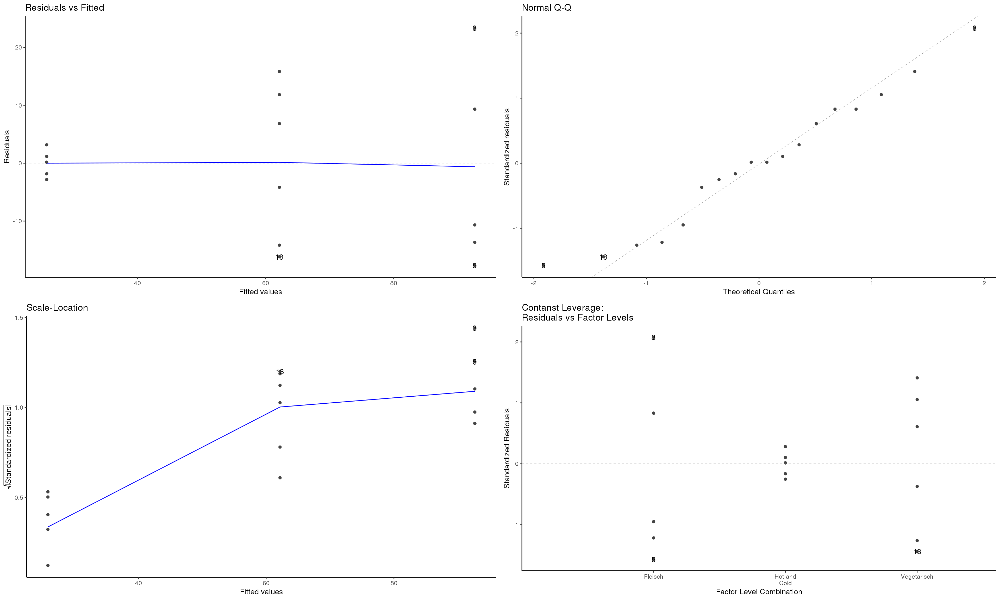
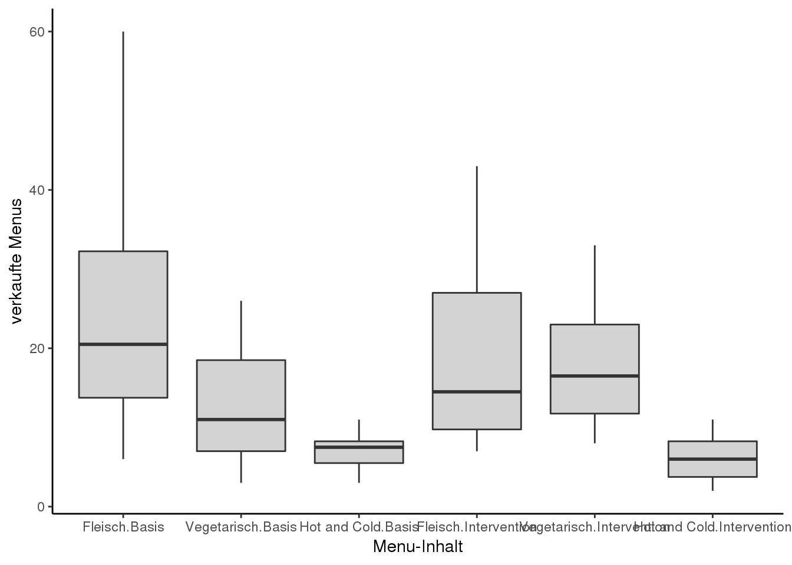

7.3 Lösung
7.3.1 Musterlösung Aufgabe 1: Regression (deng)
Aus Crawley (2015 S. 136, modifiziert)(14_Statistik2/RFiles/Uebung_Aufgabe1.R)
library(tidyverse)
library(ggfortify) # um autoplot() für lm/aov nutzen zu können
decay <- read_csv("14_Statistik2/data/decay.csv")7.3.1.0.1 Lösungsweg 1: \(log_{10}\)-Transformation
We start by fitting a straight line through the scatterplot, using fitline with a linear model:
ggplot(decay, aes(time, amount)) +
geom_point() +
geom_smooth(method = "lm")
This draws attention to the pronounced curvature in the data. Most of the residuals at low values of t ime are positive, most of the residuals for intermediate values of t ime are negative, and most of the residuals at high values of t ime are positive. This is clearly not a good model for these data. There is a very important point here. If, instead of looking at the fit of the model to the data using plot , we had simply done the statistics, then we might easily have come to the opposite conclusion. Here is a summary of the linear model applied to these data:
summary(lm(amount~time, decay))
##
## Call:
## lm(formula = amount ~ time, data = decay)
##
## Residuals:
## Min 1Q Median 3Q Max
## -19.065 -10.029 -2.058 5.107 40.447
##
## Coefficients:
## Estimate Std. Error t value Pr(>|t|)
## (Intercept) 84.5534 5.0277 16.82 < 2e-16 ***
## time -2.8272 0.2879 -9.82 9.94e-11 ***
## ---
## Signif. codes: 0 '***' 0.001 '**' 0.01 '*' 0.05 '.' 0.1 ' ' 1
##
## Residual standard error: 14.34 on 29 degrees of freedom
## Multiple R-squared: 0.7688, Adjusted R-squared: 0.7608
## F-statistic: 96.44 on 1 and 29 DF, p-value: 9.939e-11The model explains more than 76% of the variation in the response (a very high value of \(r\)-squared) and the \(p\) value is vanishingly small. The moral is that \(p\) values and \(r\)-squared are not good measures of model adequacy.
Because the data relate to a decay process, it might be that an exponential function \(y = ae^{-bx}\) describes the data better. If we can linearize this equation, then we can estimate the parameter values using a linear model. Let us try taking logs of both sides
\[y = ae^{-bx}\] \[log(y) = log(a) - bx\]
If we replace log(y) by Y and log(a) by A, you can see that we have a linear model: \[Y = A - bx\]
The intercept of this linear model is A and the slope is \(-b\). To fit the model we have the untransformed values of time on the x axis and the \(log\) of amount on the y axis:
ggplot(decay, aes(time, log(amount))) +
geom_point() +
geom_smooth(method = "lm")
The fit to the model is greatly improved. There is a new issue, however, in that the variance appears to increase with time and, as you will recall, non-constant variance is a potentially serious problem. Let us estimate the parameter values of this exponential model and then check its assumptions using plot (model ).
model <- lm(log(amount)~time, decay)
summary(model)
##
## Call:
## lm(formula = log(amount) ~ time, data = decay)
##
## Residuals:
## Min 1Q Median 3Q Max
## -0.5935 -0.2043 0.0067 0.2198 0.6297
##
## Coefficients:
## Estimate Std. Error t value Pr(>|t|)
## (Intercept) 4.547386 0.100295 45.34 < 2e-16 ***
## time -0.068528 0.005743 -11.93 1.04e-12 ***
## ---
## Signif. codes: 0 '***' 0.001 '**' 0.01 '*' 0.05 '.' 0.1 ' ' 1
##
## Residual standard error: 0.286 on 29 degrees of freedom
## Multiple R-squared: 0.8308, Adjusted R-squared: 0.825
## F-statistic: 142.4 on 1 and 29 DF, p-value: 1.038e-12The slope of the straight line is -0.068528 and its standard error is 0.005743. The value of \(r~2\) is even higher following transformation (83%) and the \(p\) value is even lower. The intercept of 4.547386 with its standard error of 0.100295 is for A, not the value we need for our exponential equation, but a is the antilog of A. When we back-transform, the standard errors become asymmetric up and down. It may take a moment for you to see why this is the case. Let us add one standard error to the intercept and subtract one standard error from it to get upper and lower intervals.
upper <- 4.547386 + 0.100295
lower <- 4.547386 - 0.100295Now we return to the original scale of measurement by taking antilogs using exp:
exp(upper)
## [1] 104.3427
exp(lower)
## [1] 85.37822so the intercept on the original axis is between 85.38 and 104.34, but the best estimate for the intercept is
exp(4.547386)
## [1] 94.38536which means that the interval above the intercept is 9.957 but the interval below it is 9.007. Beginners often find it disconcerting that the two unreliability measures are different sizes.
Now we check the assumptions of the model using autoplot(model):
autoplot(model)
The good news is that the normality of errors assumption looks good (the top right plot is reasonably straight). As we guessed by looking at the transformed data, however, the variance does show strong signs of non-constancy (the top left and bottom left plots). The bottom right plot shows that data points 30 and 31 have high leverage and point number 28 has a large residual. We shall see how deal with these issues later, but for the moment, we want to plot the curved line through the scatterplot on the original scale of measurement.
fun.1 <- function(x){94.38536 * exp(-0.068528 * x)}
ggplot(decay, aes(time, amount)) +
geom_point() +
stat_function(fun = fun.1)
As you can see, our model is a good description of the data for intermediate values of time, but the model is poor at predicting amount for time = 0 and for time > 28. Clearly, more work is required to understand what is going on at the extremes, but exponential decay describes the central part of the data reasonably well.
7.3.1.0.2 Lösungsweg 2: Polynomial Regression
The relationship between \(y\) and \(x\)often turns out not to be a straight line. But Occam’s razor requires that we fit a linear model unless a non-linear relationship is significantly better at describing the data. So this begs the question: how do we assess the significance of departures from linearity? One of the simplest ways is to use polynomial regression
\[y = a + bx + cx^2 + dx^3+ ...\]
The idea of polynomial regression is straightforward. As before, we have just one continuous explanatory variable, x, but we can fit higher powers of \(x\), such as \(x^2\) and \(x^3\), to the model in addition to \(x\) to describe curvature in the relationship between \(y\) and \(x\). It is useful to experiment with the kinds of graphs that can be generated with very simple models. Even if we restrict ourselves to the inclusion of a quadratic term, \(x^2\), there are many curves we can describe, depending upon the signs of the linear and quadratic terms:
df <- data.frame(x = 0:10)
ggplot(df) +
lims(x= c(0,10), y = c(4,14)) +
stat_function(fun = function(x)4+2*x-0.1*x^2, col = "blue") +
stat_function(fun = function(x)4+2*x-0.2*x^2, col = "green") +
stat_function(fun = function(x)12-4*x+0.3*x^2, col = "red") +
stat_function(fun = function(x)4+0.5*x+0.1*x^2, col = "yellow")
The first function (blue) describes a curve with positive but declining slope, with no hint of a hump (\(y = 4 + 2x - 0.1x^2\)). The second (green) has a curve with a clear maximum (\(y = 4+2x-0.2x^2\)), and the third (red) has a curve with a clear minimum (\(y= 12-4x+0.35x^2\)). The last curve (yellow) shows a positive association between \(y\) and \(x\) with the slope increasing as \(x\) increases (\(y=4+0.5x+0.1x^2\)). So you can see that a simple quadratic model with just three parameters (an intercept, a slope for \(x\), and a slope for \(x^2\)) is capable of describing a wide range of functional relationships between \(y\) and \(x\). It is very important to understand that the quadratic model describes the relationship between \(y\) and \(x\); it does not pretend to explain the mechanistic (or causal) relationship between \(y\) and \(x\).
We can use the decay data as an example of model comparison. How much better than a linear model with two parameters (call it model2) is a quadratic with three parameters (model3)? The function I stands for “as is” and allows you to use arithmetic operators like caret (^ for calculating powers) in a model formula where the same symbol would otherwise mean something different (in a model formula, caret means the order of interaction terms to be fitted).
model2 <- lm(amount~time, decay)
model3 <- lm(amount~time+I(time^2), decay)
summary(model3)
##
## Call:
## lm(formula = amount ~ time + I(time^2), data = decay)
##
## Residuals:
## Min 1Q Median 3Q Max
## -22.302 -6.044 -1.603 4.224 20.581
##
## Coefficients:
## Estimate Std. Error t value Pr(>|t|)
## (Intercept) 106.38880 4.65627 22.849 < 2e-16 ***
## time -7.34485 0.71844 -10.223 5.90e-11 ***
## I(time^2) 0.15059 0.02314 6.507 4.73e-07 ***
## ---
## Signif. codes: 0 '***' 0.001 '**' 0.01 '*' 0.05 '.' 0.1 ' ' 1
##
## Residual standard error: 9.205 on 28 degrees of freedom
## Multiple R-squared: 0.908, Adjusted R-squared: 0.9014
## F-statistic: 138.1 on 2 and 28 DF, p-value: 3.122e-157.3.2 Musterlösung Aufgabe 2: ANOVA (deng)
kormoran <- read_delim("14_Statistik2/data/kormoran.csv", ";")
weight <- read_csv("14_Statistik2/data/growth.csv")
kormoran$Jahreszeit <- factor(kormoran$Jahreszeit, levels = c("F","S","H","W"), ordered = T)
kormoran_smry <- kormoran %>%
group_by(Unterart, Jahreszeit) %>%
summarise(
mean = mean(Tauchzeit)
)
ggplot(kormoran_smry, aes(Unterart, mean, fill = Unterart)) +
geom_bar(stat = "identity") +
facet_grid(.~Jahreszeit) +
scale_fill_grey(guide = F) 
model <- aov(gain~diet*supplement,weight)
summary(model)
## Df Sum Sq Mean Sq F value Pr(>F)
## diet 2 287.17 143.59 83.52 3.00e-14 ***
## supplement 3 91.88 30.63 17.82 2.95e-07 ***
## diet:supplement 6 3.41 0.57 0.33 0.917
## Residuals 36 61.89 1.72
## ---
## Signif. codes: 0 '***' 0.001 '**' 0.01 '*' 0.05 '.' 0.1 ' ' 1
model <- aov(Tauchzeit~Unterart*Jahreszeit, kormoran)
summary(model)
## Df Sum Sq Mean Sq F value Pr(>F)
## Unterart 1 106.9 106.93 40.259 4.01e-07 ***
## Jahreszeit 3 756.2 252.06 94.901 5.19e-16 ***
## Unterart:Jahreszeit 3 11.0 3.67 1.382 0.266
## Residuals 32 85.0 2.66
## ---
## Signif. codes: 0 '***' 0.001 '**' 0.01 '*' 0.05 '.' 0.1 ' ' 1
kormoran %>%
group_by(Unterart, Jahreszeit) %>%
summarise(
n = n()
) %>%
spread(Unterart, n)
## # A tibble: 4 x 3
## Jahreszeit C S
## <ord> <int> <int>
## 1 F 5 5
## 2 S 5 5
## 3 H 5 5
## 4 W 5 5
kormoran_smry <- kormoran %>%
group_by(Unterart, Jahreszeit) %>%
summarise(
n = n(),
mean = mean(Tauchzeit),
se = sqrt(2.66/n)
)
ggplot(kormoran_smry, aes(Unterart, mean, fill = Unterart)) +
geom_bar(stat = "identity") +
facet_grid(.~Jahreszeit) +
scale_fill_grey(guide = F) +
geom_errorbar(aes(ymin = mean-se, ymax = mean+se),width = 0.2) 
summary.lm(model)
##
## Call:
## aov(formula = Tauchzeit ~ Unterart * Jahreszeit, data = kormoran)
##
## Residuals:
## Min 1Q Median 3Q Max
## -3.280 -0.905 -0.290 0.945 4.580
##
## Coefficients:
## Estimate Std. Error t value Pr(>|t|)
## (Intercept) 19.03500 0.36442 52.234 < 2e-16 ***
## UnterartS -3.27000 0.51536 -6.345 4.01e-07 ***
## Jahreszeit.L 9.69112 0.72883 13.297 1.40e-14 ***
## Jahreszeit.Q 0.53000 0.72883 0.727 0.4724
## Jahreszeit.C 0.08497 0.72883 0.117 0.9079
## UnterartS:Jahreszeit.L -2.02141 1.03073 -1.961 0.0586 .
## UnterartS:Jahreszeit.Q -0.10000 1.03073 -0.097 0.9233
## UnterartS:Jahreszeit.C -0.55454 1.03073 -0.538 0.5943
## ---
## Signif. codes: 0 '***' 0.001 '**' 0.01 '*' 0.05 '.' 0.1 ' ' 1
##
## Residual standard error: 1.63 on 32 degrees of freedom
## Multiple R-squared: 0.9114, Adjusted R-squared: 0.892
## F-statistic: 47.02 on 7 and 32 DF, p-value: 4.638e-15
model <- lm(Tauchzeit~Unterart+Jahreszeit,kormoran)
summary(model )
##
## Call:
## lm(formula = Tauchzeit ~ Unterart + Jahreszeit, data = kormoran)
##
## Residuals:
## Min 1Q Median 3Q Max
## -3.995 -0.965 0.025 0.970 5.345
##
## Coefficients:
## Estimate Std. Error t value Pr(>|t|)
## (Intercept) 19.0350 0.3703 51.400 < 2e-16 ***
## UnterartS -3.2700 0.5237 -6.244 3.69e-07 ***
## Jahreszeit.L 8.6804 0.5237 16.574 < 2e-16 ***
## Jahreszeit.Q 0.4800 0.5237 0.917 0.366
## Jahreszeit.C -0.1923 0.5237 -0.367 0.716
## ---
## Signif. codes: 0 '***' 0.001 '**' 0.01 '*' 0.05 '.' 0.1 ' ' 1
##
## Residual standard error: 1.656 on 35 degrees of freedom
## Multiple R-squared: 0.8999, Adjusted R-squared: 0.8885
## F-statistic: 78.67 on 4 and 35 DF, p-value: < 2.2e-16
kormoran <- kormoran %>%
mutate(
Jahreszeit2 = ifelse(Jahreszeit %in% c("F","S"),"1.Halbjahr","2.Halbjahr")
)
model <- lm(Tauchzeit~Unterart+Jahreszeit,kormoran)
model2 <- lm(Tauchzeit~Unterart+Jahreszeit2,kormoran)
anova(model ,model2)
## Analysis of Variance Table
##
## Model 1: Tauchzeit ~ Unterart + Jahreszeit
## Model 2: Tauchzeit ~ Unterart + Jahreszeit2
## Res.Df RSS Df Sum of Sq F Pr(>F)
## 1 35 96.001
## 2 37 235.946 -2 -139.94 25.511 1.464e-07 ***
## ---
## Signif. codes: 0 '***' 0.001 '**' 0.01 '*' 0.05 '.' 0.1 ' ' 1summary(model2)
##
## Call:
## lm(formula = Tauchzeit ~ Unterart + Jahreszeit2, data = kormoran)
##
## Residuals:
## Min 1Q Median 3Q Max
## -5.610 -1.323 -0.015 1.492 7.440
##
## Coefficients:
## Estimate Std. Error t value Pr(>|t|)
## (Intercept) 15.1100 0.6916 21.849 < 2e-16 ***
## UnterartS -3.2700 0.7986 -4.095 0.00022 ***
## Jahreszeit22.Halbjahr 7.8500 0.7986 9.830 7.3e-12 ***
## ---
## Signif. codes: 0 '***' 0.001 '**' 0.01 '*' 0.05 '.' 0.1 ' ' 1
##
## Residual standard error: 2.525 on 37 degrees of freedom
## Multiple R-squared: 0.754, Adjusted R-squared: 0.7407
## F-statistic: 56.7 on 2 and 37 DF, p-value: 5.402e-127.3.3 Musterlösung Aufgabe 3: ANOVA (egel)
7.3.4 Musterlösung Aufgabe 3
7.3.4.1 1. Frage: Unterscheiden sich die Verkaufszahlen pro Menü-Inhalt und Woche?
df <- nova # kopiere originaler Datensatz
df$label_content[grep("Pflanzlich+",df$label_content)] <- "Vegetarisch" # Fasse die Menü-Inhalte zusammen
# lasse evtl weg, da gruppen zu klein für ANOVA
df$age_groups <- cut(x = df$age, breaks = c(-Inf, 34, 49, 64, Inf), labels = c("18- bis 34-Jährigen", "35- bis 49-Jährigen", "50- bis 64-Jährigen", "65 Jahre und älter")) #
df_ <- df %>%
group_by(label_content, condit, week) %>%
summarise(tot_sold = n()) %>%
na.omit() # lasse die unbekannten Verkäufe weg
# erstes Modell
model <- aov(tot_sold ~ label_content, data = df_)
ggplot(df_, aes(x = tot_sold, y = ..count..)) + geom_histogram() + labs(x = "Verkaufte Gerichte", y = "Häufigkeit") # schaue die Verkaufszahlen in einem Histogramm an
# Sieht nach keiner Normalverteilung aus, aber ab > 25 Beobachtungen pro Gruppe sind Verletzungen in der Regel unproblematisch (Quelle: uzh).
autoplot(model) # Inspektion der Modellvoraussetzung: Daten passen für eine ANOVA (?)
leveneTest(df_$tot_sold, df_$label_content) # keine Varianzhomogenität gegeben
## Levene's Test for Homogeneity of Variance (center = median)
## Df F value Pr(>F)
## group 2 13.06 0.0005192 ***
## 15
## ---
## Signif. codes: 0 '***' 0.001 '**' 0.01 '*' 0.05 '.' 0.1 ' ' 1
summary.lm(model) # Ergebnisse sollten mit Vorsicht interpretiert werden
##
## Call:
## aov(formula = tot_sold ~ label_content, data = df_)
##
## Residuals:
## Min 1Q Median 3Q Max
## -17.6667 -9.0417 0.1667 8.7083 23.3333
##
## Coefficients:
## Estimate Std. Error t value Pr(>|t|)
## (Intercept) 92.667 5.023 18.447 1.01e-11 ***
## label_contentHot and Cold -66.833 7.104 -9.408 1.11e-07 ***
## label_contentVegetarisch -30.500 7.104 -4.293 0.00064 ***
## ---
## Signif. codes: 0 '***' 0.001 '**' 0.01 '*' 0.05 '.' 0.1 ' ' 1
##
## Residual standard error: 12.3 on 15 degrees of freedom
## Multiple R-squared: 0.8554, Adjusted R-squared: 0.8361
## F-statistic: 44.37 on 2 and 15 DF, p-value: 5.027e-07
# Alternative Testung: Kruskal-Wallis Rank Sum Test
df_$label_content <- factor(df_$label_content, levels = c("Fleisch", "Vegetarisch", "Hot and Cold")) # unabhängige Variable muss zuest als Faktor definiert werden
kruskal.test(tot_sold ~ label_content, data = df_) # sieht aus als ob sich die Verkaufszahlen zwischen den Menü-Inhalten unterscheiden würden
##
## Kruskal-Wallis rank sum test
##
## data: tot_sold by label_content
## Kruskal-Wallis chi-squared = 14.779, df = 2, p-value = 0.0006177
dunnTest(tot_sold ~ label_content, data=df_, # wie unterscheiden sich die einzelnen Levels, hierfür kann der Dunn-Test zur Hand gezogen werden. Gemäss Zar (2010) kann der Dunn Test für ungleiche Gruppen angewendet werden
method="bh") # werden korrigierte p-Werte ausgerechnet (Benjamini-Hochberg method)
## Comparison Z P.unadj P.adj
## 1 Fleisch - Hot and Cold 3.843209 0.0001214362 0.0003643086
## 2 Fleisch - Vegetarisch 1.840410 0.0657081092 0.0657081092
## 3 Hot and Cold - Vegetarisch -2.002799 0.0451988887 0.0677983331
# Visualisierung und Dasrtellung der Ergebnisse
ggplot(df_, aes(x = label_content, y= tot_sold)) + geom_boxplot(fill="lightgrey") + labs(x = "Menu-Inhalt", y = "Anzahl verkaufte Gerichte")+theme_bw()+theme() # vergrössere schrift
7.3.4.2 2. Frage: Können die Unterschiede zwischen den Menü-Inhalten durch die Experimentalbedingungen erklärt werden?
#Gruppiere Daten und fasse sie nach Vorkommen/Häufigkeit zusammen
df_ <- df %>%
group_by(condit, label_content, week, gender, member) %>%
summarise(tot_sold = n()) %>%
na.omit() # lasse die unbekannten Verkäufe weg
# Soziodemografische Unterschiede in der Menü-Wahl?
model1 <- aov(tot_sold ~ label_content * condit, data = df_)
autoplot(model1) # Inspektion der Modellvoraussetzung, 
leveneTest(df_$tot_sold ~ df_$label_content*df_$condit) # keine Varianzhomogenität gegeben
## Levene's Test for Homogeneity of Variance (center = median)
## Df F value Pr(>F)
## group 5 4.7385 0.0009274 ***
## 66
## ---
## Signif. codes: 0 '***' 0.001 '**' 0.01 '*' 0.05 '.' 0.1 ' ' 1
summary.lm(model1) # Ergebnisse müssen mit vorsicht interpretiert werden
##
## Call:
## aov(formula = tot_sold ~ label_content * condit, data = df_)
##
## Residuals:
## Min 1Q Median 3Q Max
## -20.667 -5.854 -0.750 2.917 33.333
##
## Coefficients:
## Estimate Std. Error t value
## (Intercept) 26.667 3.055 8.730
## label_contentHot and Cold -19.833 4.320 -4.591
## label_contentVegetarisch -14.000 4.320 -3.241
## conditIntervention -7.000 4.320 -1.620
## label_contentHot and Cold:conditIntervention 6.250 6.109 1.023
## label_contentVegetarisch:conditIntervention 12.750 6.109 2.087
## Pr(>|t|)
## (Intercept) 1.31e-12 ***
## label_contentHot and Cold 2.03e-05 ***
## label_contentVegetarisch 0.00187 **
## conditIntervention 0.10990
## label_contentHot and Cold:conditIntervention 0.31001
## label_contentVegetarisch:conditIntervention 0.04075 *
## ---
## Signif. codes: 0 '***' 0.001 '**' 0.01 '*' 0.05 '.' 0.1 ' ' 1
##
## Residual standard error: 10.58 on 66 degrees of freedom
## Multiple R-squared: 0.3428, Adjusted R-squared: 0.293
## F-statistic: 6.885 on 5 and 66 DF, p-value: 3.171e-05
# Alternative Testung: Kruskal-Wallis Rank Sum Test
df_$label_content <- factor(df_$label_content, levels = c("Fleisch", "Vegetarisch", "Hot and Cold")) # unabhängige Variable muss zuest als Faktor definiert werden
kruskal.test(tot_sold ~ interaction(label_content, condit), data = df_) # sieht aus als ob sich die Verkaufszahlen zwischen den Menü-Inhalten unterscheiden würden
##
## Kruskal-Wallis rank sum test
##
## data: tot_sold by interaction(label_content, condit)
## Kruskal-Wallis chi-squared = 32.929, df = 5, p-value = 3.888e-06
dunnTest(tot_sold ~ interaction(label_content, condit), data=df_, # wie unterscheiden sich die einzelnen Levels, hierfür kann der Dunn-Test zur Hand gezogen werden. Gemäss Zar (2010) kann der Dunn Test für ungleiche Gruppen angewendet werden
method="bh") # werden korrigierte p-Werte ausgerechnet (Benjamini-Hochberg method)
## Comparison Z
## 1 Fleisch.Basis - Fleisch.Intervention 0.6252709
## 2 Fleisch.Basis - Hot and Cold.Basis 3.8053596
## 3 Fleisch.Intervention - Hot and Cold.Basis 3.1800887
## 4 Fleisch.Basis - Hot and Cold.Intervention 4.1766142
## 5 Fleisch.Intervention - Hot and Cold.Intervention 3.5513433
## 6 Hot and Cold.Basis - Hot and Cold.Intervention 0.3712546
## 7 Fleisch.Basis - Vegetarisch.Basis 2.0663249
## 8 Fleisch.Intervention - Vegetarisch.Basis 1.4410540
## 9 Hot and Cold.Basis - Vegetarisch.Basis -1.7390347
## 10 Hot and Cold.Intervention - Vegetarisch.Basis -2.1102893
## 11 Fleisch.Basis - Vegetarisch.Intervention 0.3468300
## 12 Fleisch.Intervention - Vegetarisch.Intervention -0.2784409
## 13 Hot and Cold.Basis - Vegetarisch.Intervention -3.4585297
## 14 Hot and Cold.Intervention - Vegetarisch.Intervention -3.8297843
## 15 Vegetarisch.Basis - Vegetarisch.Intervention -1.7194950
## P.unadj P.adj
## 1 5.317933e-01 0.6647415955
## 2 1.415983e-04 0.0007079916
## 3 1.472300e-03 0.0036807493
## 4 2.958802e-05 0.0004438203
## 5 3.832701e-04 0.0014372630
## 6 7.104479e-01 0.8197475911
## 7 3.879781e-02 0.0727458931
## 8 1.495694e-01 0.2039583012
## 9 8.202866e-02 0.1367144363
## 10 3.483345e-02 0.0746430989
## 11 7.287191e-01 0.7807704365
## 12 7.806739e-01 0.7806738906
## 13 5.431325e-04 0.0016293974
## 14 1.282557e-04 0.0009619174
## 15 8.552428e-02 0.1282864238
# visualisiere das Modell
ggplot(df_, aes(x = interaction(label_content, condit), y = tot_sold)) + geom_boxplot(fill="lightgrey") + labs(x = "Menu-Inhalt", y = "verkaufte Menus")
Statistik 8 (20.11.2018)
Crawley, Michael J. 2015. Statistics: An Introduction Using R. Wiley. http://onlinelibrary.wiley.com/book/10.1002/9781119941750.